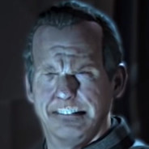

MOD MAINTENANCE • COMPATIBILITY • ORIGINAL PROJECTS
Keeping useful mods alive and working together.
Free mod maintenance, compatibility patches, revivals, and original projects.
PROJECT CATALOG
Mods by game
Loading projects...
ABOUT
What this hub is for
This is the central index for the mods I maintain, revive, patch, or build. Individual Workshop pages remain focused on the mod itself; this site keeps the broader catalog, maintenance status, credits, source links, and project history in one place.
Revived and compatibility projects remain free. Original authors are credited on each relevant project entry, with links back to the original work whenever available.
OPTIONAL SUPPORT
Support continued maintenance
Everything listed here is free. If maintaining old favorites and compatibility patches has been useful to you, you can optionally support the broader work.